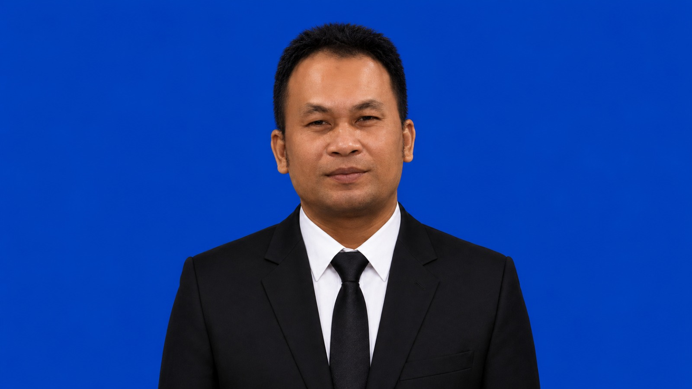
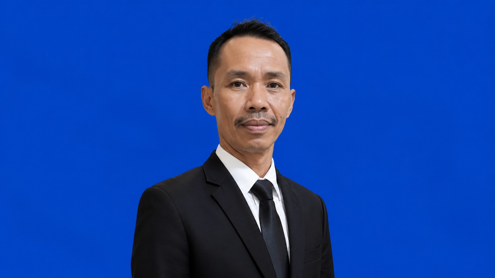

Universitas Handayani Makassar merupakan salah satu perguruan tinggi swasta yang berkomitmen menghasilkan lulusan yang unggul, profesional, dan berdaya saing global.
Universitas Handayani Makassar berdiri sebagai institusi pendidikan tinggi yang memiliki komitmen dalam menghasilkan sumber daya manusia yang berkualitas. Kampus terus mengembangkan pendidikan, penelitian, dan pengabdian kepada masyarakat sesuai perkembangan ilmu pengetahuan dan teknologi.
Menjadi Universitas yang unggul dalam pengembangan ilmu pengetahuan, teknologi, dan kewirausahaan yang berdaya saing global.
Pimpinan Universitas Handayani Makassar yang bertanggung jawab dalam pengelolaan akademik dan pengembangan universitas.

Memimpin dan mengembangkan fakultas dalam bidang akademik, penelitian, dan pengabdian kepada masyarakat.

Bertanggung jawab dalam pengelolaan fakultas serta peningkatan mutu pendidikan dan pelayanan akademik.
Menyelenggarakan pendidikan tinggi yang bermutu dan relevan dengan kebutuhan dunia kerja.
Menghasilkan penelitian yang inovatif dan bermanfaat bagi masyarakat.
Berkontribusi dalam pembangunan masyarakat melalui berbagai kegiatan pengabdian.